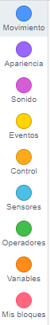

Los Bloques permiten diferentes acciones para los objetos o personajes.
En función del bloque que sea seleccionado se muestra el conjunto de instrucciones que se pueden utilizar en la creación de programas.

Los bloques permiten diferentes acciones para los objetos o personajes.
En función del bloque que sea seleccionado se muestra el conjunto de instrucciones que se pueden utilizar en la creación de programas.
Tenemos los siguientes bloques:
- Movimiento: instrucciones que sirven para mover a los personajes u objetos que se utilizan en los ejes de coordenadas x - y
- Apariencia: permiten cambiar el aspecto de los personajes u objetos (colores, disfraz, ocultarlos, mostrarlos, e incluso modificar el tamaño), de esta forma se simula que los personajes realicen movimientos insertando pensamientos y textos a modo de bocadillos con los que los personajes hablan.
- Sonido: sirven para insertar sonidos predefinidos, de Internet o los que se tengan grabados en el ordenador
- Evento: instrucciones que sirven para reaccionar el programa, los personajes y/o los objetos. El usuario puede tener interacción con ellos (pulsando en la bandera, pulsando una tecla) o pueden ser los propios objetos los que se relacionen entre sí (enviando mensajes, tocándose entre ellos, etc.).El envío y recepción de mensajes sirve para que interactuar entre objetos, fondos o personajes situados en lugares diferentes.
- Control: permiten repetir acciones en determinados casos, como son los bucles y los condicionales, también se pueden establecer tiempos de espera, detener todos los personajes y crear clones de los mismos.
- Sensores: permiten controlar la interacción entre varios objetos, entre ellos el tiempo por medio de un cronómetro
- Operadores: permite establecer operaciones matemáticas, elegir un numero al azar, realizar uniones y divisiones; además se puede unir texto y calcular la longitud de los mismos.
- Variables: permite definir variables locales a un objeto o globales al programa, crear nuevas con el nombre que se desee, acceder a su valor y modificarlo.
- Mis bloques: permite crear bloques que se necesiten para algún programa y que no estén predefinidos en los bloques anteriores.